Tutorial: Using our Tools for Model Driven Language Development
written by Andreas Blunk, May 2007
This tutorial shows how our language modelling tools can be used together to create the structure and behaviour of a computer language. The demonstration is based on an example language for modelling and executing composite state automatons. Before we start, you should download the complete language definition from here (todo: create jar) or check it out from SVN (project hub.sam.stateautomaton). It contains an Eclipse project that includes all the necessary resources we are using in this tutorial (e.g. all models that make up the language). You may use the archive without Eclipse at first, but in the last part of this tutorial, a working Eclipse 3.2 installation will be required. So you should install Eclipse 3.2 now and then import the archive as an Eclipse project. Further tools and Eclipse plugins will be needed during the tutorial, but you can install them later. When you have finished installing Eclipse and set up the project, you may proceed with the tutorial. Don't worry when you have build problems at this point, we will solve them later on.
We begin with an introduction into our language modelling method and then construct the example language by using the tools that we have build for this method.
Introduction
Computer languages consist of different aspects like structure, static constraints, semantics and notation. Like any other piece of software, they can be modelled. Language modelling reduces language development to modelling each language aspect, so that tools and specifications can automatically be derived.
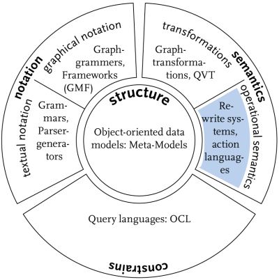 |
Structure models of the language concepts are the basis for all other language aspects. They define the language's abstract syntax in a language meta-model (they define the models the user can create). All other language aspects are based on the language meta-model. They provide meta-model elements with additional information that is needed to describe them, e.g. notation and semantic. For modelling structure, we use the CMOF language as a meta-meta-model. It allows object-oriented modelling and provides enhanced features like subsetting and redefinition that allow a flexible design and embrace reuse of common language concepts. But structure is just one aspect of a language. Many languages are more than just static structure. They describe dynamic processes. If we want to execute, interpret or simulate models in these languages, we have to define their execution semantics. Our approach is to define the language syntax (basic concepts) first. Then extend it with runtime structures that define additional data structures where runtime information is saved. This information allows execution of different runtime instances based on the same syntax model. We then augment the model with operations and apply behaviour descriptions to them that describe state changes in a model instance. Different possibilities exist to describe behaviour, e.g. pure Java code or activity diagrams from UML. In order to understand this tutorial, you should be familiar with our CMOF-based programming framework A MOF 2.0 for Java. Further knowledge of our operational approach to define execution semantics may be helpful. Please refer to the following articles and papers for detailed information: |
Developing an Example Language
We decided to create a language for modelling and executing composite state automatons. The reason for this choice is that composite state automatons are small enough to present them in a tutorial and yet complicated enough to explain most of the features in our tools. We first describe the process for creating the language structure and then continue with the definition of the execution semantics.
The basic concepts of the language are described in a syntax meta-model. These are: automaton, transition and state with a special initial state and final state. Based on these concepts, the syntax model should reflect the following rules:
An automaton has a name. It may have many states and many transitions. There has to be one intial state and one or more final states. Each state has a name and outgoing as well as incoming transitions. Transitions describe state changes by specifying on which input token a transition can fire. A transition must have one source and one target state. Later, we execute an automaton on a sequence of input tokens, but this is part of the semantics.
Furthermore a state may contain a sub-automaton. This is a language feature that can be compared to types in computer languages. We define an automaton (the type) and use it as a sub-automaton (instances of the type) in many different states (in this case: composite states). It must be possible for each sub-automaton to reside in a different state at runtime. Thus extra runtime information is needed to execute the language. This language feature can be compared to an object as an instance of class. Each object has its own identity and its own state. Whenever we have such a type concept in a language, we need runtime structures that deal with runtime information. Composite state automatons are a good example to show this language aspect here. But lets concentrate on modelling the syntax first and then go over to runtime structures.
Modelling Structure
All parts of the structure can be modelled with the UML modelling tool MagicDraw UML. We support loading and saving MagicDraw models within our modelling tools. This allows us to use MagicDraw UML as the basis for modelling structure. But we are not dependend on it, you can use any UML tool that can load and save a model in XMI format version 2.0. However, further explanation will refer to MagicDraw UML, so you should get it now and then proceed.
Syntax
We first model the state automaton syntax with respect to the basic concepts we identified before. As modelling with MagicDraw UML is straightforward, we instantly present the syntax model in the figure below. You may open the model in MagicDraw UML. It is named StateAutomaton.syntax.mdxml and can be found in the resources-directory. But be aware: you will see a much more complex model in this file. We are going to evolve the model below to the more complex one.
Figure: syntax meta-model with MagicDraw
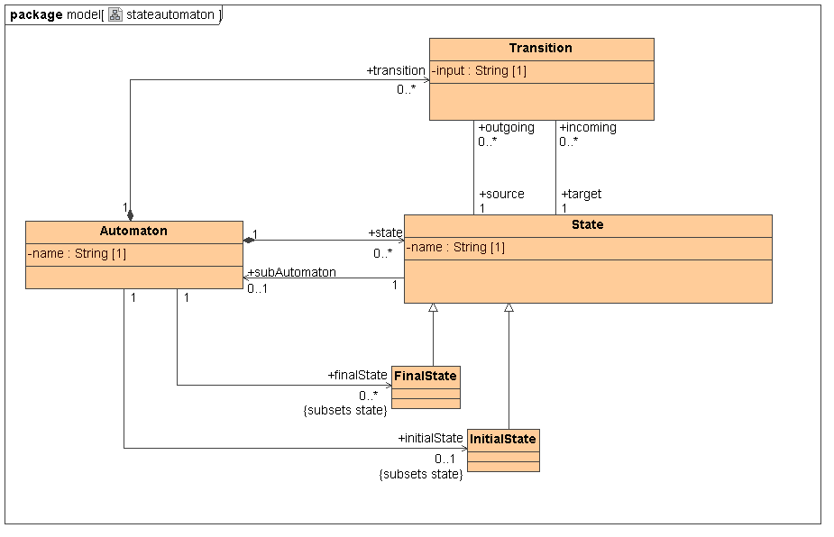
Static Constraints
The syntax meta-model defines the models a user can create. But this does not prevent the user from creating invalid models although they follow all the syntax rules. E.g. we would say that it is illegal if a user model does not define an initial state for a state automaton. We can avoid these illegal models by defining static constraints for meta-model classes that may be checked at some point, e.g. when a user model is loaded from an XMI file or when it is to be executed or interpreted. This is known as static analysis of languages which is another language aspect. For the specification of static constraints, we attach OCL invariants to meta-model classes.
For the state automaton example we added the following invariant (named automaton-invariant) to the meta-model class Automaton:
self.state->size() > 0 and initialState->size() = 1 and finalState->size() > 0 and initialState.outgoing->size() = 1
You may add more static constraints with MagicDraw UML by opening a class specification and then create a new constraint as shown in the figure below. You have to choose "OCL 2.0" as the constraint's language. We will show you later how to check these constraints.
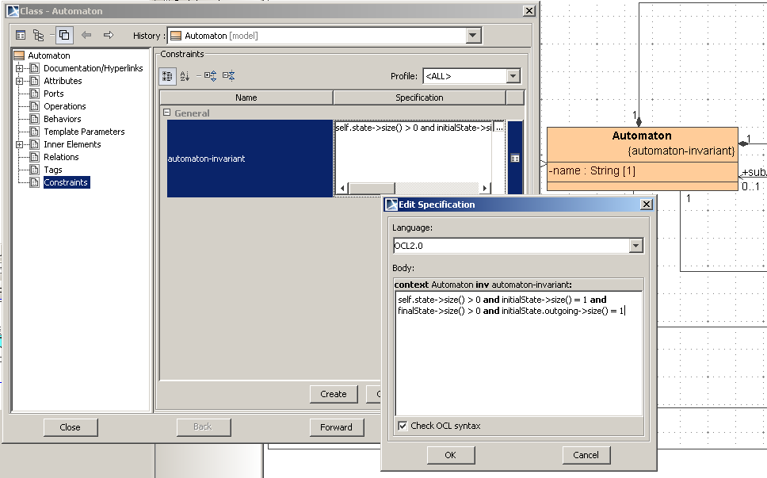
Runtime Structure
Model execution requires additional runtime information (e.g. the current state of an automaton). Such runtime information could be stored in the model itself. But this approach has several flaws. One problem is that we will lose the model's initial state if we execute it. An even stronger argument is that during model execution we often need several runtime representations of the same model element. E.g. in our language, each automaton has to remember its current state. When we reuse automatons as sub-automatons in composite states, each runtime instance of a sub-automaton can reside in a different state.
Therefore we need a runtime element for automatons in our example language. We create a class AutomatonRuntime and model the relationship to class Automaton as a runtime-representation-of relationship with an UML realisation arrow. Instances of AutomatonRuntime represent running automatons with distinct runtime information. We then establish an association from class AutomatonRuntime to class State with the association end named currentState. This allows us to remember the current state in each automaton runtime instance.
However, saving just the current state is not enough runtime information for composite state automatons. We also have to save runtime instances of sub-automatons for each composite state of the owning automaton. So when we enter a composite state A, then there is a runtime instance of the corresponding sub-automaton of A that is in some inner state. At some point, we will leave the state A and when we come back to A, the same runtime instance auf A's sub-automaton must still be present. A itself is part of an owning automaton whose runtime instance represents the current state of execution. Besides the current state information, we now also save instances of AutomatonRuntime for every composite state. This is a reflexive association in class AutomatonRuntime that can be modelled with a qualified access to one association end named compositeState. The qualifier is a composite state of type State.
Figure: Relations between syntax and runtime classes and the meta layers. M3 is CMOF, M2 is the language meta-model and M1 is a user model. Unlabeled UML realisation arrows represent instance-of relationships between meta layers.
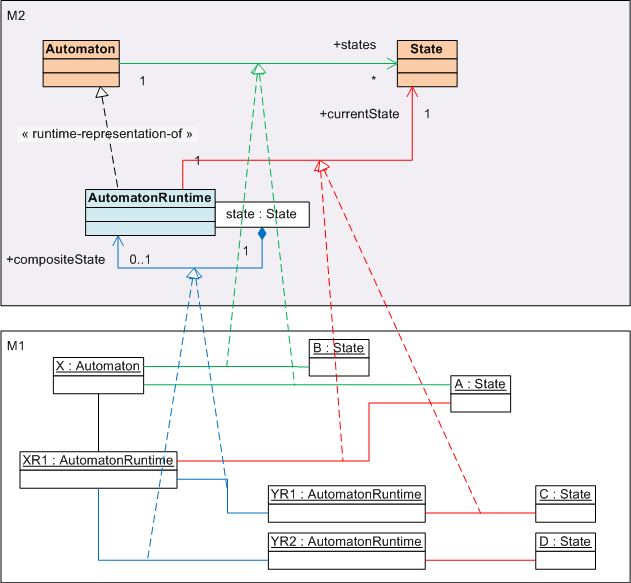
But how are runtime classes instantiated and who manages the connection to syntax classes? Well, there has to be some kind of modelling framework that takes responsibility. We present our modelling framework in the next section. When we load a model with runtime-representation-of relationships and instruct the framework to look for them, then some magic happens and additional operations are added to syntax and runtime classes. E.g., the framework will generate an operation metaCreateAutomatonRuntime for class Automaton and an operation metaDelete for class AutomatonRuntime. Implementations of these operations are supplied by the modelling framework. So in a semantic description we can invoke these operations and the modelling framework takes care of the connection between syntax and runtime instances.
Figure: representation of syntax and runtime classes in the modelling framework

Figure: syntax meta-model extended with runtime information
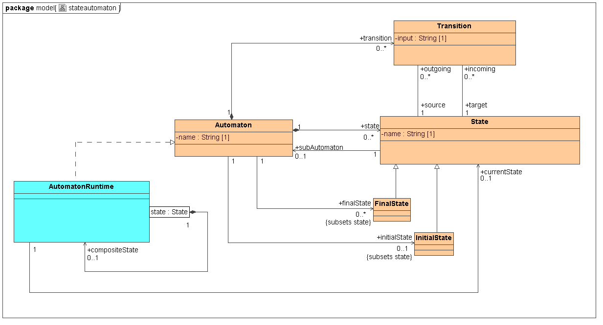
Programming with CMOF-based Models
Our language meta-model is based on CMOF. In order to work with CMOF-based models, we developed a programming framework: A MOF 2.0 for Java (abbreviated AMOF2). It allows storing and managing meta-models and models. A binary version of AMOF2 is already supplied with the example language (located in resources/lib/aMOF2.0forJava.jar). Our language meta-model has to be in a format that AMOF2 can understand. It currently understands XMI version 2.0 and file formats of several proprietary UML modelling tools. One of them is MagicDraw UML which we have already used to model the language structure. Programming with the model in Java requires the generation of a model repository with AMOF2.
Repository Generation
The generation of repositories is a general task that has to be repeated everytime meta-models change. Therefore we supply several Ant tasks with AMOF2. We can use them in an Ant file to generate the repository code.
Figure: repository-build.xml
1 <project name="StateAutomaton" basedir="." default="generate-repository"> 2 3 <property name="src-dir" value="${basedir}/src"/> 4 <property name="gen-src-dir" value="${basedir}/generated-src"/> 5 <property name="bin-dir" value="${basedir}/bin"/> 6 7 <path id="classpath"> 8 <pathelement path="${bin-dir}"/> 9 <fileset dir="${basedir}/resources/lib"> 10 <include name="**/*.jar"/> 11 </fileset> 12 </path> 13 14 <target name="init"> 15 <mkdir dir="${bin-dir}"/> 16 <typedef name="package" classname="hub.sam.mof.ant.Package" classpathref="classpath"/> 17 <taskdef name="generatecode" classname="hub.sam.mof.ant.GenerateCode" classpathref="classpath"/>
Here we declare new Ant tasks from AMOF2 which we use in subsequent targets.
18 </target> 19 20 <target name="clean"> 21 <delete dir="${bin-dir}"/> 22 <delete includeemptydirs="true"> 23 <fileset dir="${gen-src-dir}" includes="**/*"/> 24 </delete> 25 </target> 26 27 <target name="generate-repository" depends="clean,init"> 28 <generatecode src="resources/StateAutomaton.syntax.mdxml" md="true" destDir="./generated-src" instances="true">
This task generates the repository code. The parameters have the following meaning.
- src: the language meta-model as input
- md: indicates that the model file is a MagicDraw file
- destDir: a directory where repository code will be placed
- instances: instructs AMOF2 to generate extra code for runtime representations
29 <package name="model" javaPackagePrefix="hub.sam.stateautomaton"/>
The meta-model is located in the CMOF package "model". We add a prefix to the model's package so that code will be generated in Java package "hub.sam.stateautomaton.model" instead of just "model".
30 </generatecode> 31 </target> 32 33 </project>
Now its time for you to become active! You should now generate the state automaton repository by executing the generate-repository target in the file repository-build.xml.
Creating a User Model
Now we are able to create a user model in the state automaton language (an instance of the language meta-model). This can be compared to a program in traditional computer languages. For demonstration purposes the model has to use composite states. Therefore we create a model that consists of an automaton X with composite states A and B and both states contain a sub-automaton Y. The automaton Y has two (simple) states C and D. Additionally all automatons have initial and final states and transitions between them (see figure below).
Figure: example state automaton model
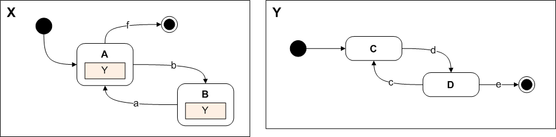
You can find the source code for creating this model in class hub.sam.stateautomaton.StateAutomaton, method createLargeTest. The next section explains how the automaton X can be executed for a sequence of input tokens like "dbdecacf". We will see that automaton Y resides in two different states at runtime, one for state A and one for state B.Make clear that one had to create an editor to really use the language
Execution Semantics
Introduction
The first question is: What does it mean to execute a model written in our language?
The answer is different from language to language. In this case, executing a model means: consume a sequence of input tokens in a dedicated automaton by transitioning between the automaton's states. Each firing of a transition changes the automaton's current state. If there is no transition in the current state and the current state is a composite state, then consumation is forwared to the sub-automaton. The token is disgarded, if it cannot be consumed at all. This explanation is referred to as the execution semantic of this language.
The next question is: How do we model execution semantics?
Our approch is to use operational semantics. We augment the meta-model with operations and then add semantic descriptions to them. We can describe semantics by programming Java code, modelling behaviour with UML like activities or writing query expressions with OCL.
For our example language we add the following operations:
- Automaton::run(inputSequence: String)
- create a new runtime instance
- initialise the running automaton
- iterate over the sequence of input tokens and try to consume them
- destroy all runtime information
- AutomatonRuntime::initialise()
make the initial transition - AutomatonRuntime::consume(token: String): Boolean
- try to consume an input token by firing an active transition
- return true on success, else false
- AutomatonRuntime::incarnateCompositeState(state: State)
- incarnate the composite state by creating a runtime instance for the supplied state's sub-automaton
- save runtime information in property compositeState
- AutomatonRuntime::destroy()
delete the runtime instance of this automaton and all runtime instances in composite states
- State::getEnabledTransition(input: String) : Transition
query operation that returns the active transitions in this state
- Transition::fire(context: AutomatonRuntime)
make a transition and change the current state of the supplied runtime instance (context) to the target state - Transition::printDebugInfo
a helper operation that prints debug information for this transition (source, target, input)
Figure: complete structure meta-model
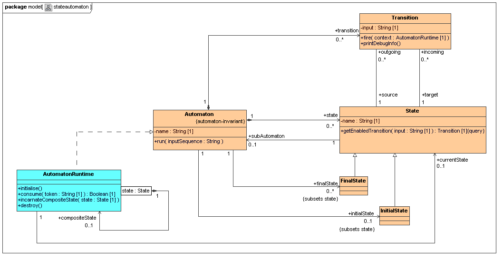
We can use OCL expressions for describing query operations and Java code or an activity language to describe behaviour that changes the model.
OCL Queries
TODO: derived attributes, move section?
The operation getEnabledTransition from our example language is a query operation. But how do we attach an OCL expression to an operation with MagicDraw UML?
First, we have to open the specification of the operation and then check that we see all properties.
| 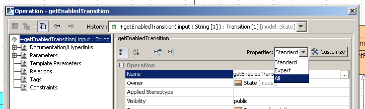 |
In the properties page the operation has to be marked as "isQuery".
| 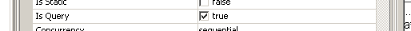 |
We then look for the body condition property and expand it on the right.
| 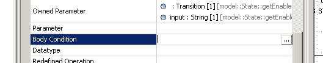 |
A dialog opens where we can enter the OCL expression. We have to select "OCL 2.0" as the language.
| 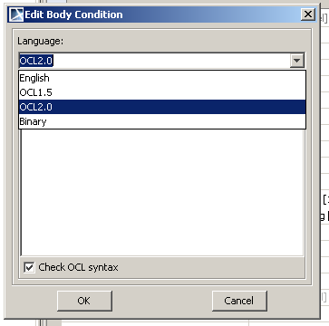 |
The OCL query is then added as an owned rule to this operations properties.
| 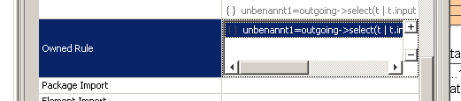 |
Java Code
AMOF2 lets us define custom implementations of a model's operations in a Java class named <meta-model-class>Custom, placed in the same package as the meta-model class. Java implementations for all the operations above are supplied with the Eclipse project. We present two of them here and you may look at the others yourself. The two operations are Automaton::run and AutomatonRuntime::initialise.
Figure: source code AutomatonCustom.java
1 package hub.sam.stateautomaton.model; 2 3 public class AutomatonCustom extends AutomatonDlg { 4 5 @Override 6 public void run(java.lang.String input) { 7 AutomatonRuntime runtime = self.metaCreateAutomatonRuntime(); 8 runtime.initialise(); 9 10 while (input.length() > 0) { 11 java.lang.String chr = input.substring(0, 1); 12 boolean consumed = runtime.consume(chr); 13 input = input.substring(1); 14 if (!consumed) { 15 // ignore token 16 System.out.println("ignoring token '" + chr + "'"); 17 } 18 } 19 20 runtime.destroy(); 21 } 22 23 }
Figure: source code AutomatonRuntimeCustom.java
1 package hub.sam.stateautomaton.model; 2 3 public class AutomatonRuntimeCustom extends AutomatonRuntimeDlg { 4 5 @Override 6 public void initialise() { 7 setCurrentState(getMetaClassifierAutomaton().getInitialState()); 8 Transition initialTransition = getCurrentState().getOutgoing().iterator().next(); 9 initialTransition.fire(self); 10 } 11 12 // ... 13 14 }
After we wrote custom implementations for all operations, we can execute our test model as follows:
(source code extracted from class hub.sam.stateautomaton.StateAutomaton)
1 Automaton automaton = createLargeTestModel(testFactory); 2 automatonRuntime.run("dbdecacf");
Activities
The problem with Java code is that its not model based and so tools cannot be derived (e.g. a debugger). What we need is a model based specification of the language semantics. Our approach is to use an activity language that is similar to UML activities. Actually it is a subset of UML activities and its semantics is based on the well-known petrinet formalism, so there is a solid foundation. It is designed to describe semantics in CMOF-based models, and so we named it MOF Action Semantics (abbreviated MAS). It defines a set of atomic actions that can be used to describe operational semantics. Activities are composed of these actions plus some more elements for control and object flow. Each activity models the behaviour of an operation. If the model is executed, the corresponding activities will be interpreted in the context of a model instance. Without going into the details of the activity language, we now present our tools for modelling them.
Do not give a history of our tools development, just say how it works now ...In the past, we just had a parser that could transform a textual notation of an activity into a model. The notation was very cryptic and difficult to understand. Therefore we decided to develop a graphical editor that is based on Eclipse's GEF. This editor is known as MASE (MAS Editor).
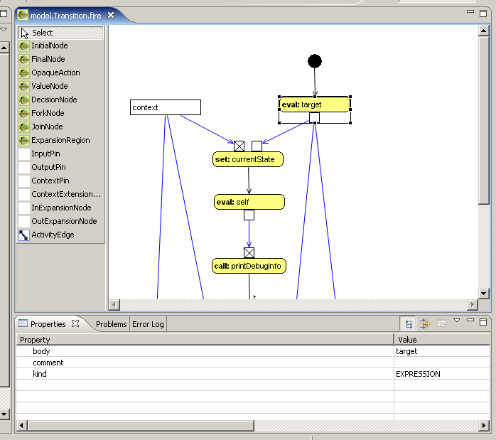
First, we stored activity models in seperate files. The connection between an operation and an activity was simply based on the operation's name. The activity files had to be named the same with a special ending (e.g. operation run with activity file run.asxml). The MAS execution engine then loaded this file into AMOF2 and executed it in an instance of a corresponding structure model. This approach had several flaws. We compensated them by using an Eclipse plugin that we had already developed. You may know the plugin from the AMOF Tutorial page. Its the MOF 2.0 Browser Plugin (abbreviated MOF2B). It can be used to browse CMOF-based models in an Eclipse Tree View.
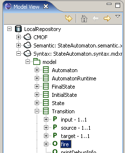
We now use it together with MASE to provide language developers with a simple interface for modelling activities. You can browse through a structure model, right-click on an operation und choose "Create Behaviour" or "Edit Behaviour" to open a MASE editor.
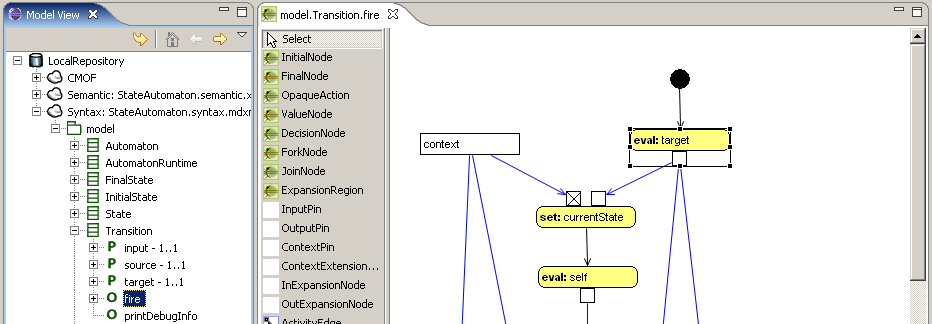
Multiple editors can be opened at the same time. The activities are saved together in one XML file. At this point, we need to install the required plugins. We then show you how to use them.
Installing required Eclipse Plugins: (todo: deploy an updated version of the mdld feature)
We assembled our Eclipse Plugins for meta-modelling as an Eclipse Feature. It includes AMOF (as a plugin), MAS (execution + editor), a variation of the OSLO OCL interpreter. and MOF2B. Please install this feature now by following these instructions:
Open the Eclipse Installation Wizard ...
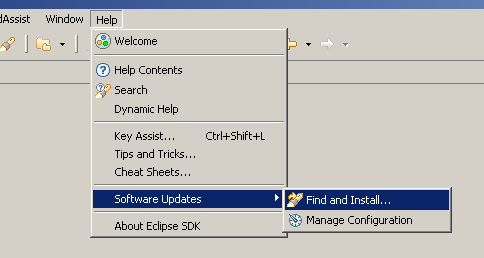
Select "Search for new features to install" ...
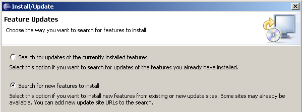
Choose "New Remote Site ..." and enter "http://amof2.berlios.de/updatesite" as the update site's URL.
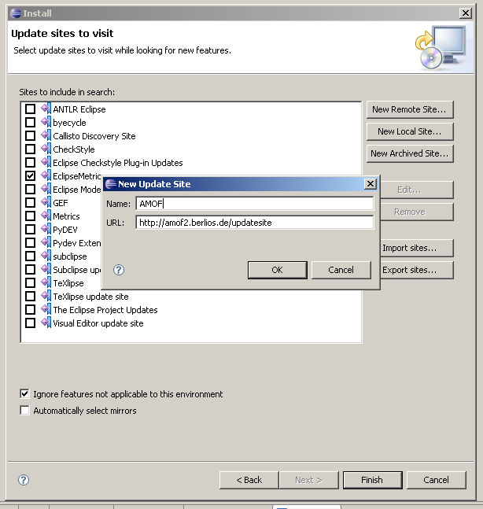
Select the added update site and click "Finish" to proceed.
Select the feature "Model Driven Language Development Feature"
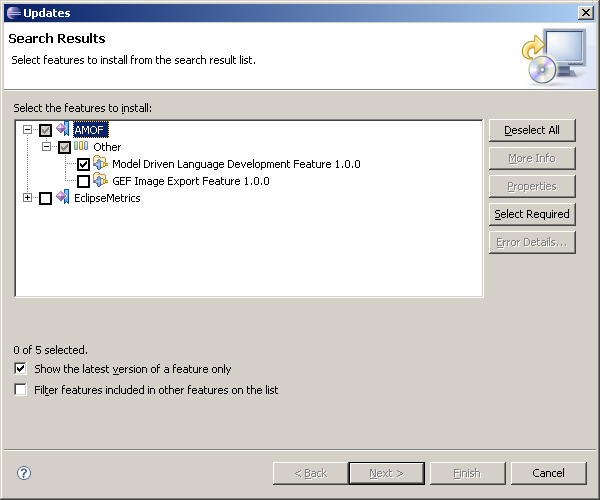
Click "Finish" to start installation.
Now we would like to use the installed plugins and open activities of some operations that we supplied with the example language. While operations are part of a syntax meta-model that is based on the CMOF meta-meta-model, activities are part of a semantic model that is based on the MAS meta-model. We cannot hold the two models in one XMI file without losing the ability to load syntax models with MagicDraw UML. So we decided to have two seperate model files, StateAutomaton.syntax.mdxml and StateAutomaton.semantic.xml.
The activities defined in the semantic model are fairly useless without a reference to a syntax model. They make only sense in the context of a syntax model that defines their operations. Therefore we connect a syntax and a semantic model in a MAS context file. This file is a simple Java properties file. It defines the properties syntax and semantic that refer to the two model files. The next figure shows the MAS context file for our example language that is located in resources/StateAutomaton.masctx.
syntax = StateAutomaton.syntax.mdxml semantic = StateAutomaton.semantic.xml
MAS context files can be loaded with the MOF 2.0 Browser Plugin. We provide a special Eclipse perspective named "Mof Action Semantics Editor" for editing activities. When you open the perspective, you will find the MOF 2.0 Browser Plugin at the left, optional MAS Editors at the right and a properties view at the bottom.
You can now add a new MAS context to the repository in the Model View at the left.
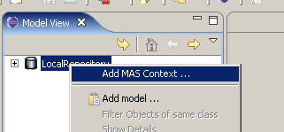
Open the MAS context file in resources/StateAutomaton.masctx. (we made this screenshot from an english windows version)
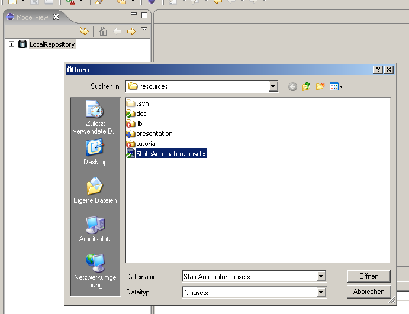
The syntax and semantic model are loaded into two seperate extents in the AMOF2 repository. We can browse the syntax model tree and apply behaviour in the form of MAS activities to operations.
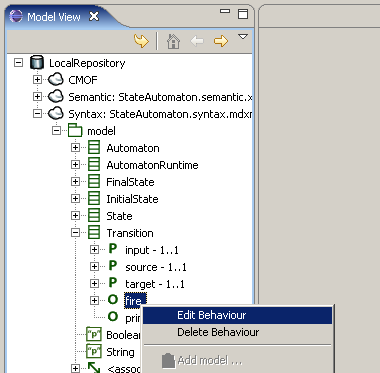
This opens a new MAS editor for the operation model.Transition.fire.
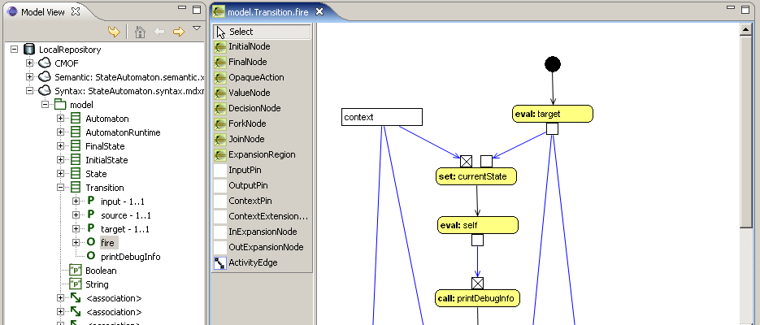
The MAS language itself is not explained in this tutorial. If you want to learn how to model activities with MAS, you have to read our paper Human Comprehensible and Machine Processable Specifications of Operational Semantics.
Executing the User Model
The last step is to actually execute a model in the language. The next paragraph explains the required Java code.
1 package hub.sam.stateautomaton; 2 3 import hub.sam.stateautomaton.model.Automaton; 4 import hub.sam.stateautomaton.model.FinalState; 5 import hub.sam.stateautomaton.model.InitialState; 6 import hub.sam.stateautomaton.model.State; 7 import hub.sam.stateautomaton.model.Transition; 8 import hub.sam.stateautomaton.model.modelFactory; 9 import hub.sam.mas.execution.MasExecutionHelper; 10 import hub.sam.mas.management.MasContext; 11 import hub.sam.mas.management.MasModelContainer; 12 import hub.sam.mas.management.MasRepository; 13 import hub.sam.mas.management.MasXmiFiles; 14 import hub.sam.mas.management.SimpleMasXmiFiles; 15 import hub.sam.mof.Repository; 16 import hub.sam.mof.management.MofModel; 17 import hub.sam.mof.management.MofModelManager; 18 import hub.sam.mof.ocl.OclEnvironment; 19 import hub.sam.mof.ocl.OclObjectEnvironment; 20 21 public class StateAutomaton { 22 23 public void execute() throws Exception { 24 Repository repository = Repository.getLocalRepository(); 25 Repository.getConfiguration().setWarnAboutForeignExtentObjectUsage(false); 26 Repository.getConfiguration().setGenerousXMI(true); 27 28 MasXmiFiles xmiFiles = new SimpleMasXmiFiles("resources/", "StateAutomaton.masctx");
Loads XMI file locations for a syntax and a semantic model from a MAS context file. The path of the model files is always relative to the MAS context file.
29 30 MasModelContainer masModelContainer = new MasModelContainer(repository);
Creates a new container object for the syntax and the semantic model.
31 32 masModelContainer.loadMasModel(xmiFiles.getMasFile());
Loads the semantic model from the XMI file location into the container.
33 34 masModelContainer.loadSyntaxModelForExecution(xmiFiles.getSyntaxFile(), "Package:model");
Loads the syntax model for execution. This form of loading the syntax model creates implicit elements for runtime-representation-of relationships. In the execution case we need these elements but we do not want to see them when editing the model, and so there is also a loadSyntaxModelForEditing method.
35 masModelContainer.getSyntaxModel().addJavaPackagePrefix("hub.sam.stateautomaton");
Adds the Java package prefix to the model again. We already added this prefix when the repository was generated, but MagicDraw UML does not allow us to save this information with its XMI files.
36 37 MasContext masContext = MasRepository.getInstance().createMasContext(masModelContainer);
Creates a MAS context object for the models in the container. The context object manages the connection between operations and activities. Basically it allows the MAS implementations manager to find activities for operations and the editing environment to create and delete links.
38 39 MofModelManager testManager = new MofModelManager(repository); 40 testManager.setM2Model(masModelContainer.getSyntaxModel()); 41 MofModel testModel = testManager.createM1Model("test"); 42 modelFactory testFactory = (modelFactory) testModel.getFactory();
Creates an environment for the test model by using our new model management interface. The interface will be described in detail in the AMOF2 tutorial as soon as possible. For now, we give the following explanation: We first create a test model manager that can manage models of different meta-layers. We then set the syntax model from the model container as the M2 model and create our test model as the M1 model. We retrieve a factory for the test model, which we use later to create model elements. In the past, there was no such structure like a model manager that could keep all the important information together in one place.
43 44 MasExecutionHelper.prepareRun(repository, masContext, testModel);
Prepares the test model for execution within the MAS context and installs implementations managers for activities, ocl queries and Java code (in order).
45 46 Automaton automaton = createLargeTestModel(testFactory); 47 48 boolean invariantCheckResult = testModel.getExtent().getAdaptor(OclEnvironment.class).checkAllInvariantsOnAllObjects(); 49 if (!invariantCheckResult) { 50 System.out.println("Warning: Meta-model invariants evaluated to false."); 51 }
Checks the static constraints that we defined in the beginning of the tutorial. All OCL invariants defined in the meta-model are checked against the test model.
52 53 automaton.run("dbdecacf");
Finally: executes the test model.
54 } 55 56 public static void main(String[] args) throws Exception { 57 new StateAutomaton().execute(); 58 } 59 60 private Automaton createLargeTestModel(modelFactory factory) { 61 // ... 62 } 63 64 }
Appendix
Background information: AMOF2 Implementations Managers
When an operation is invoked on an object in the AMOF2 repository, AMOF2 looks for installed implementations managers and uses them if they can supply an implementation. Different implementations managers exist. Lets take a look at the source code of method MasExecutionHelper.prepareRun which we have used above.
1 public class MasExecutionHelper { 2 3 public static void prepareRun(Repository repository, MasContext masContext, MofModel m1Model) throws Exception { 4 ExecutionEnvironment env = new ExecutionEnvironment(m1Model.getExtent(), 5 masContext.getMasModel().getMetaModel().getExtent(), repository); 6 7 Extent semanticExtent = masContext.getMasModel().getExtent(); 8 ((ExtentImpl) semanticExtent).setCustomImplementationsManager(new ImplementationsManagerContainer( 9 new ImplementationsManager[] { 10 new MultiLevelImplementationsManager(masContext.getMasModel().getFactory()), 11 new ImplementationsManagerImpl() } 12 ));
At this point, things become complicated :). We install implementations managers for activities in our language's semantics extent. We have to do this because MAS itself is a language and we use this language for modelling the behaviour of other languages (e.g. the state automatons). It consists of a syntax meta-model and execution semantics with an implementation in Java code. You can think of its execution semantics as the engine that interprets a given activity of your language. We install a MultiLevelImplementationsManager first. It handles implementations for runtime operations (e.g. metaCreateAutomatonRuntime, metaDelete). Next, we install a ImplementationsManagerImpl which handles implementations in Java code.put the OCL implementation managager here too.
13 14 // MultiLevelImplementationsManager creates runtime instances 15 ((ExtentImpl) m1Model.getExtent()).setCustomImplementationsManager(new ImplementationsManagerContainer( 16 new ImplementationsManager[] { 17 new MASImplementationsManager(masContext, env), 18 new MultiLevelImplementationsManager(m1Model.getFactory()), 19 new OclImplementationsManager(), 20 new ImplementationsManagerImpl() } 21 )); 22 }
The order in which we install implementations managers matters. The first manager is checked first and then the second and so on. This way we could model one operation's implementation with an activity and all the others with Java code. We just have to guarantee that there is one implementation that can be found. The OclImplementationsManager is new here. It looks for OCL queries attached to operations in the meta-model.
23 24 }
Future Tools
Modelling Notation
Textual Editing Framework (TEF)
Debugging MAS
MAS Debugger